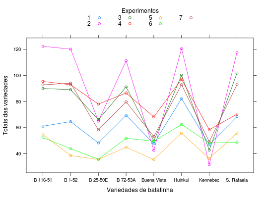

Grupo de ensaios de competição de variedades de batatinha, realizados pelo engenheiro agrônomo Oscar A. Garay, da Estação Experimental de Balcarce, Argentina, instalados em localidades da região batateira da Província de Buenos Aires. Cada um deles tinha 4 repetições e 8 variedades em blocos casualizados. Os dados, no entanto, não são os valores individuais mas os totais das produções das variedades em cada experimento, somando as parcelas de todos os blocos. Os quadrados médios dos resíduos de cada experimento estão disponíveis no atributo objeto.
Um data.frame com 56 observações e 3 variáveis, em que
variedexpertotaisO atributo qmr é um vetor com os quadrados médios residuais da
análise de variância de cada experimento, segundo um modelo para
o delineamento de blocos casualizados. Um exemplo de como são dos
dados individuais está em PimentelEg5.2, que
refere-se ao experimento número 3 com todas as observações.
PIMENTEL-GOMES (2009), Tabela 8.3.1, pág. 147.
library(lattice) data(PimentelTb8.3.1)#> Warning: data set ‘PimentelTb8.3.1’ not foundstr(PimentelTb8.3.1)#> 'data.frame': 56 obs. of 3 variables: #> $ varied: Factor w/ 8 levels "B 116-51","B 1-52",..: 1 2 3 4 5 6 7 8 1 2 ... #> $ exper : Factor w/ 7 levels "1","2","3","4",..: 1 1 1 1 1 1 1 1 2 2 ... #> $ totais: num 61.1 64.6 48.3 69.4 47.7 ... #> - attr(*, "qmr")= Named num 3.15 2.63 8.55 2.09 3.25 1.99 5.35 #> ..- attr(*, "names")= chr "exper1" "exper2" "exper3" "exper4" ...attr(PimentelTb8.3.1, "qmr")#> exper1 exper2 exper3 exper4 exper5 exper6 exper7 #> 3.15 2.63 8.55 2.09 3.25 1.99 5.35ord <- with(PimentelTb8.3.1, order(exper, varied)) PimentelTb8.3.1 <- PimentelTb8.3.1[ord, ] xyplot(totais ~ varied, groups = exper, type = "o", data = PimentelTb8.3.1, xlab = "Variedades de batatinha", ylab = "Totais das variedades", auto.key = list(title = "Experimentos", cex.title = 1, columns = 4))